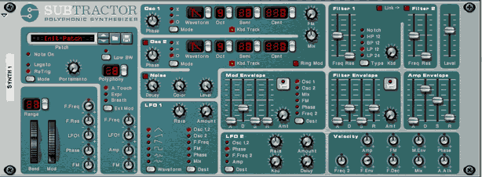
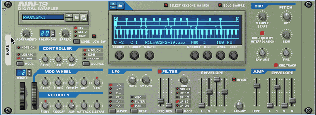
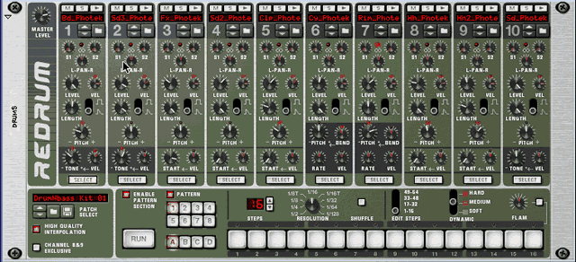
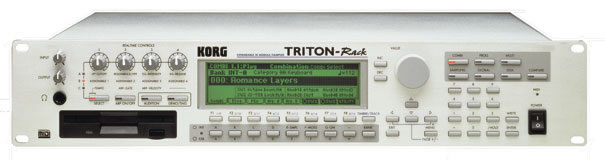
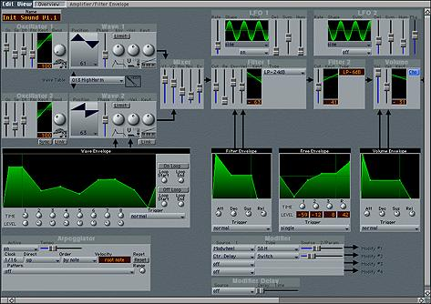

In the physical world, performance tools are usually musical instruments, like guitars or drums. In electronic environments, they usually take the form of MIDI synthesizers. They are now emulated in virtual studios, as well, using your computer to create and to control sound.
| Instrument | Reason |
|---|---|
| Synthesizer Module | SubTractor |
| Digital Sample Player | NN-19 |
| Drum Machine | ReDrum |
| Sample-based Groove Box | Dr.
Rex |
Although these virtual synthesizer modules will help us to create and control sound, we'll still need to stay in the physical world to play them. Any MIDI keyboard controller, including your Oxygen 8, will allow us to control the synthesizers in Reason to record our performances using their MIDI sequencers.
This is SubTractor, the synthesizer module in Reason.

NN-19 is Reason's digital sample player.

ReDrum is Reason's drum machine.

Synthesizers
Synthesizers are devices that produce sound entirely by electronic means. Using a synthesizer, the desktop music producer may control every parameter of the sound, including pitch, timbre, and loudness. Since the synthesizer allows for very fine control over musical sound, every part performed can meet the precise musical needs of the production.
Key technical issues that differentiate synthesizers from one another include:
Even more important than these technical specifications, are the instrument's sound quality, its ease of use, and the way it feels to play. These are more difficult to quantify and require the musician to actually experience the instrument to determine if it is right for his production needs.
The User Interface
How does a user access all the power and flexibility in a synthesizer?
A synthesizer may have hundreds of individual parameters that determine how the device produces a sound and control operational features. We view and edit those parameters through various displays and physical controls found in a user interface. A good user interface is easy to learn and allows the user quick, intuitive control of a synthesizer's many parameters. Although it would be great to have an individual knob or slider for each parameter, hardware is expensive and the sheer number these needed would be cost prohibitive. In the physical world, manufacturers spend a great deal of time and energy designing cost effective user interfaces for their products.
The Triton Rack, pictured below, has a single screen that can display a number of different pages for each group of parameters to be edited. The knobs and buttons we see are multi-functioned and control different parameters, depending on the functions called for in the screen display. This type of paged-based user interface is common to many synthesizers. The downside of this is that in order to take full advantage of all the features available, you're going to spend a great deal of time learning the user interface.

Editor/Librarians
One of the advantages of working in the virtual world is that we're already familiar with the user interface of the computer platform we use. Several software developers have written programs to help musicians easily access all of the programming functions of hardware synthesizers. These editor/librarian programs allow users to edit sounds in a device from their computer screen and store the sounds they've created on their computer.
Take a look at the following screen from EMagic's SoundDiver editor/librarian program. Notice the virtual knobs and sliders, as well as the detailed graphic displays. These provide a clear overview and easy access to all the parameters in this particular hardware synthesizer.

Virtual Synthesizers
Most off-the-shelf computer systems are powerful enough to use their own native processing power to generate synthesized sound. The virtual instruments we'll be using in Reason and Logic produce sound in this manner. Since the user interface of these instruments will be displayed on your computer screen, they'll be great tools to help us learn about synthesizers.
Take a look at Subtractor. Every parameter is shown in a single, easy to read display. There are clearly defined sections that will allow us to quickly edit the elements of sound: pitch, timbre and loudness.
Compare SubTractor to the SoundDiver editor/librarian shown above. Notice that although the user interface looks a bit different, the parameters themselves are very similar. Both display controls for various standard synthesizer parameters, so the concepts we learn using SubTractor can be easily applied to many other synthesizers.
Synthesizers produce sound in several different ways. Some, like SubTractor pictured above, make their sounds by starting with electronic building blocks, while others begin with short digital recordings of acoustic instruments or sounds from nature called samples.
These devices are often called samplers if they can record sounds themselves. If they use prerecorded samples and offer synthesizer control over the sounds they are referred to as sample-based synthesizers. Using the NN-19 Sampler in Reason, we'll learn the basics of using samples to create new sounds.
Take a look at Reason's NN-19 Sampler pictured below. You'll notice that although it's a sample-based synthesizer, most of the parameters you'll be editing are the same as what you see pictured in SubTractor. Again, what you learn using NN-19 can be applied to any sampler in the physical or virtual world.